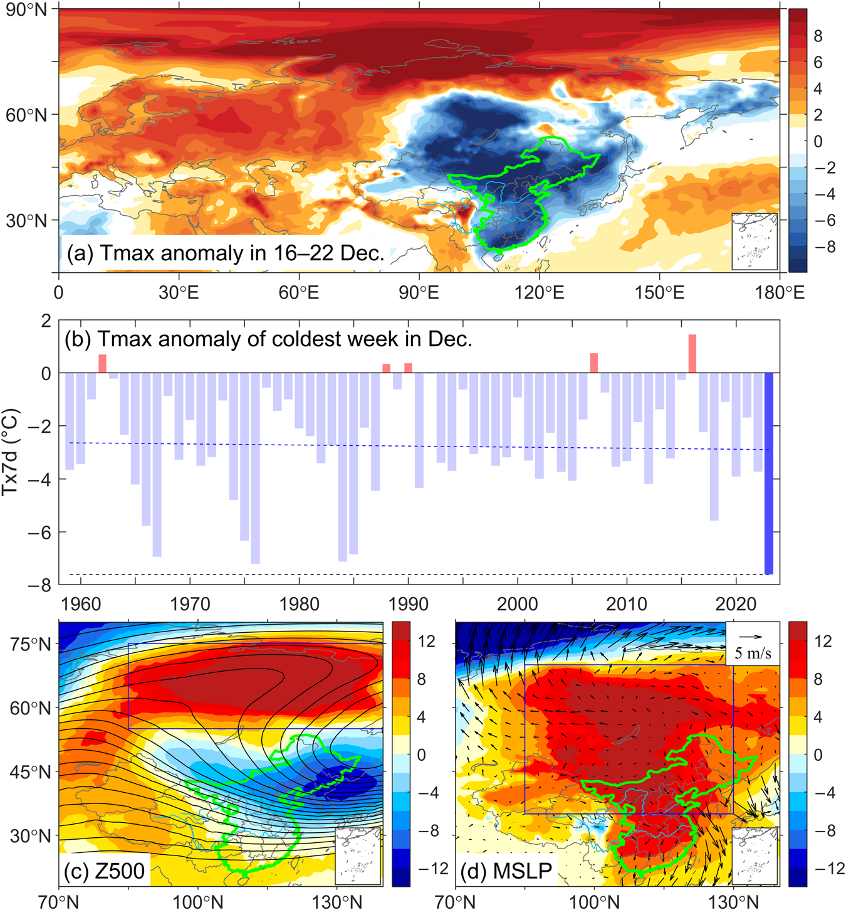
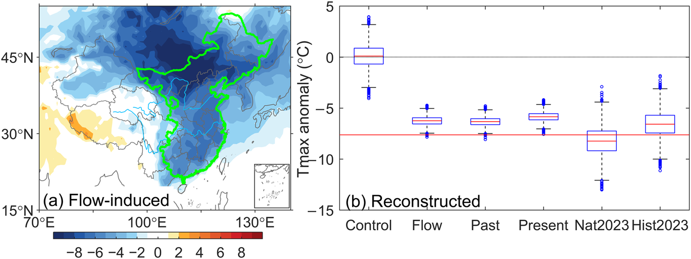
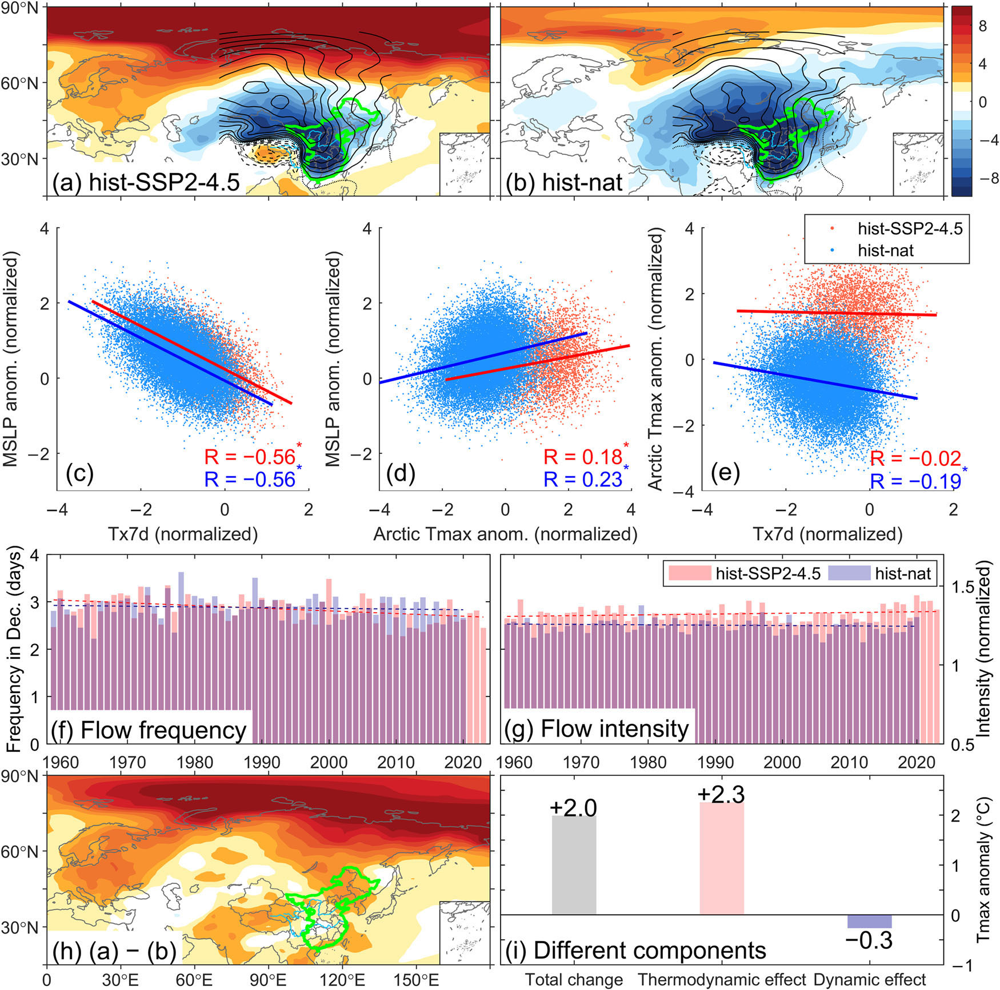
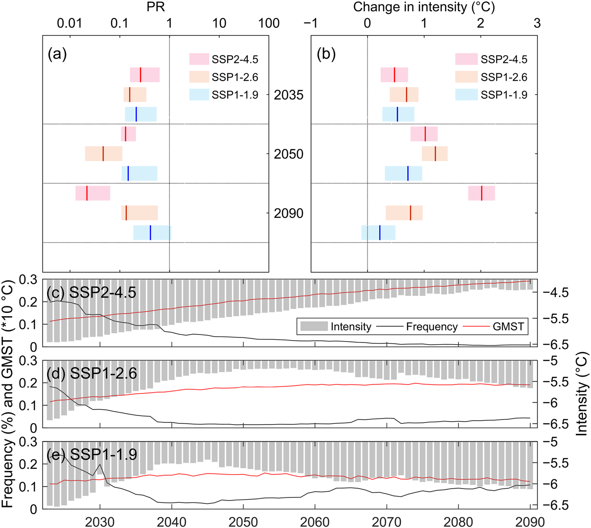

研究专栏｜寒冷事件归因
最暖年份里，为什么还会有破纪录寒潮？
简介
这项研究以 2023 年 12 月中国东部破纪录寒冷事件为例，解释了最暖年份里的这场强寒潮：异常大尺度环流主导了事件本身，而人为气候变化的整体作用是在削弱类似寒潮。CMIP6 分析进一步发现，人为影响会略微增强有利于寒潮的环流，但这股降温作用远小于背景增暖的作用。未来随着持续增暖，类似寒潮总体还会减少；在低排放路径下，全球增暖逐渐趋稳，寒潮减少的趋势也会放缓，并在后期有所回升。
背景
2023 年是当时全球有观测记录以来最暖的一年，年末国内却出现了一场让人印象深刻的寒潮。12 月 16—22 日，中国东部区域平均最高气温距平约为 −7.6°C，成为 1959 年以来 12 月最冷的一周。与此同时，北极异常偏暖，欧亚大陆呈现出鲜明的“暖北极—冷欧亚”温度分布。
这种一暖一冷的组合，一直是气候研究中颇受关注的话题。一些研究提出，北极快速增暖可能改变中高纬环流，让阻塞高压更容易维持，也为冷空气南下创造条件。2023 年这次事件中，暖北极、贝加尔湖附近持续的阻塞高压，以及异常强盛的西伯利亚高压确实同时出现，很容易让人联想到这套解释。
而在事件归因研究中，包括此前对欧亚和中国东部寒潮的分析，人为增暖的总体作用通常是让极端寒冷更少、更弱。我们想把这两方面放到同一项研究里看清楚：异常环流怎样造成了这次破纪录低温，人为气候变化又怎样改变了类似寒潮的发生概率和强度。

方法
研究用每年 12 月最冷一周的区域平均最高气温距平来衡量事件，记为 Tx7d。具体来说，先将中国东部每天的最高气温相对于 1961—1990 年同期的偏差做区域平均，再计算连续七天的平均值，取当月最低值。这样既考虑了寒冷覆盖的范围，也保留了持续一周的特点。
故事线分析从这次具体事件出发，使用构造环流相似方法（CFA），把历史中的多个相似天气形势按合适的权重组合，重建接近 2023 年的环流，再用相同权重重建温度。我们先估计环流能解释多少低温，再固定类似环流，比较 ERA5 中过去与较近期的气候，以及 HadGEM3 模拟中有、无人为影响的气候，看看背景增暖让温度改变了多少。
概率分析则把这次事件放进一类寒潮中，利用九个 CMIP6 模式比较有人为强迫和仅自然强迫时，达到 2023 年寒冷程度的事件有多常见、同样罕见的事件有多冷，并进一步拆分人为影响中的动力和热力作用。未来预估以2023 年气候为基准，用 21 年窗口表示各时期：例如 2023 年对应 2013—2033 年，世纪末对应 2080—2100 年。
结果
贝加尔湖附近的阻塞高压持续存在，配合低层强盛的西伯利亚高压，将冷空气不断送向中国东部。CFA 重建表明，这套异常大尺度环流解释了约 83% 的事件强度，对应约 −6.3°C 的温度异常，是这次破纪录低温最主要的直接原因。
把相似环流放到不同气候背景下，就能看到增暖在向相反方向发挥作用。在 ERA5 中，与 1959—1984 年相比，1985—2022 年的相似环流对应温度约高 0.5°C；HadGEM3 中有、无人为强迫的比较，则得到约 1.7°C 的人为增温。两组比较的参照气候不同，但都显示：异常环流把温度往下拉时，更暖的背景也在往上“托”温度。

将视角转向同类事件，CMIP6 多模式集合给出的结果更加直观：在 2023 年气候下，与无人为影响的情景相比，类似寒潮的发生概率降低约 93%，同等概率事件的寒冷程度减弱约 1.9°C。也就是说，2023 年这场异常环流仍然足以造成破纪录低温，而它发生时的气候背景，已经让同类寒潮比过去更难出现。
模式还让我们有机会仔细看看暖北极、寒潮和环流之间的关系。有、无人为强迫时，类似寒潮都伴随着西伯利亚高压和暖北极型温度分布；西伯利亚高压越强，中国东部通常越冷，北极也往往越暖。这些联系在两种气候下都存在，说明这套天气配置在没有人为影响时也能形成。
变化较大的是两个区域温度之间的直接联系：仅自然强迫时，北极越暖，中国东部往往越冷；加入人为强迫后，这种负相关几乎消失，西伯利亚高压与中国东部寒冷之间的联系却依然稳定。持续增暖改变了温度背景，也让我们看到，理解这类事件时，环流是两个区域之间更值得追踪的一环。
进一步比较发现，人为气候变化并未显著增加这类西伯利亚高压型环流的出现频率，却使其强度增强约 6%，确实带来了有利于降温的动力作用。不过，作用大小差得很明显：对模式中的类似寒潮做温度变化分解，热力增暖约为 +2.3°C，动力降温约为 −0.3°C，合起来的净变化约为 +2.0°C。环流的增强抵消了一小部分增温，最终仍是背景增暖占主导。

未来变化取决于增暖会持续到什么程度。在 SSP2-4.5 中等排放情景下，类似寒潮继续减少、减弱；到本世纪末，相对于 2023 年气候，发生概率预计进一步降低约 96%，同等概率事件的寒冷程度减弱约 2.0°C。
低排放路径呈现出不同的后期变化。随着排放下降，全球增暖逐渐趋稳，继续压低寒潮发生概率的增温作用也随之减弱，模拟中的寒潮在降到较低水平后开始有所回升。这个转折大约出现在 SSP1-2.6 的 2060 年前后和 SSP1-1.9 的 2040 年代中期。到世纪末，SSP1-1.9 下相对于 2023 年的概率与寒冷强度下降均不再达到统计显著，意味着在控制住增暖的未来，类似寒潮依然是需要面对的天气。

讨论
把故事线和概率结果放在一起，2023 年这场寒潮就比较容易理解了：强环流决定了这一次为什么这么冷，背景增暖则让同样的天气条件不至于更冷，并降低了同类事件出现的机会。一次破纪录寒潮和长期减少的寒冷事件可以同时存在，分别看清事件的形成过程和概率变化，才能解释这种看似反常的组合。
“暖北极—冷欧亚”的讨论也需要放在这样的框架里。两个区域的温度联系会随着气候背景改变，而在这项研究中，大尺度环流与寒冷之间的联系更稳定。人为影响既增强了相关环流，也更强烈地抬高了温度，最终的寒冷变化取决于两者共同作用。至于 2023 年这套极强环流和暖北极异常为何形成，还值得继续追踪。
未来增暖趋稳后，环流和气候系统内部的起伏仍会带来强寒潮。供暖、电力、交通和农业系统需要长期保留应对极端低温的能力；把减排目标与这些具体的适应安排一起考虑，才能更从容地面对一个平均更暖、却仍有严寒的世界。
背后的故事
这项工作源于 2023 年底的一次快速归因，是我们快速归因系统的又一次实践。寒假期间，我补上了故事线分析，也初步看了 CMIP6 模式里的情况，想把故事线与概率归因的结合做成这篇文章的重点。
后续投稿却一直不太顺利，直到 2024 年 6 月转投 npj Climate and Atmospheric Science。一位审稿人建议拒稿重投，另一位建议大修，但也提出了很多疑问，编辑最后给了大修。我很珍惜这次机会，那个暑假基本没休息，一直在想办法回答审稿人的问题。
其中一项工作是补充 CMIP6 环流数据，可服务器空间实在有限，只能把数据放在外接硬盘里，处理起来特别慢。反复等待和分析的过程很消磨心性，好在一轮返修后，两位审稿人都给了很正面的回应，最后接收时真的非常开心。这次返修也让我更认真地想清楚，故事线和概率归因各自回答什么、又该怎样放在一起讲，对后来写博士论文帮助很大。
这篇工作还要感谢我的师弟江家城和师妹张玉婷，他们在前期帮我收集了事件影响资料和新闻报道。